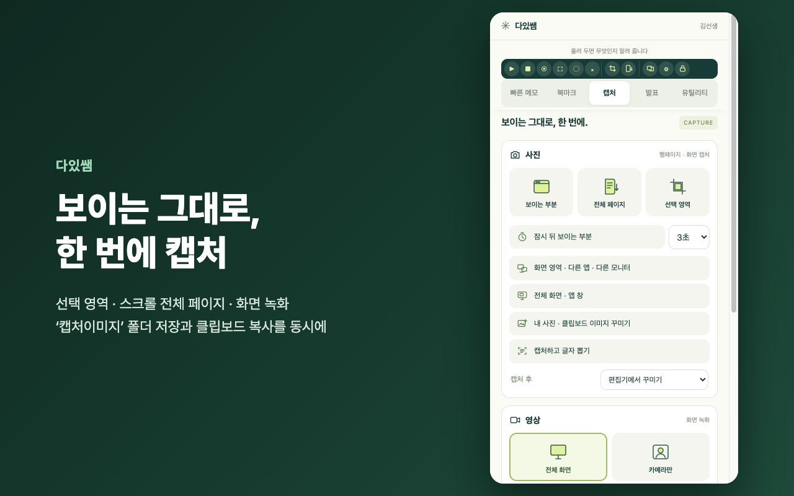

할 수 있는 것

빠른 메모 · 북마크
수업 중 떠오른 것을 바로 적고, 같은 Google 계정의 다른 컴퓨터에서 이어서 봅니다. 수업 자료 사이트는 폴더로 정리합니다.

캡처 · 녹화
선택 영역, 스크롤 전체 페이지, 화면 녹화. 바탕화면 ‘캡처이미지’ 폴더 저장과 클립보드 복사를 한 번에.

발표 도구
화면 확대, 큰 포인터, 집중 모드, 화면 조각 핀. 맥·윈도우 발표 도우미 앱과 함께 씁니다.

수업 유틸리티 · 잠금
타이머, 수업 시보, 발표자 뽑기, 팀 포인트 판, 소음 측정기, 녹음기. PIN 잠금과 전체 백업 · 복원.
내려받기
Chrome 웹 스토어 판은 검토가 끝나면 위 ‘Chrome 웹 스토어’ 단추로 설치할 수 있습니다. 지난 버전은 모든 릴리스에 있습니다.
설치는 이렇게
- 위 확장 ZIP 을 받아 압축을 풀고, 나온 폴더를 문서 폴더처럼 지우지 않을 곳에 둡니다.
- Chrome 주소창에 chrome://extensions → 오른쪽 위 개발자 모드 켜기.
- 압축해제된 확장 프로그램을 로드 → 그 폴더를 고릅니다.
- 퍼즐 아이콘에서 다있쌤을 고정하고, 처음 화면에서 이름과 PIN 을 정합니다(잠금이 필요 없으면 PIN 없이 바로 쓰기).
- 발표 도구를 쓰려면 사이드바 발표 → 발표 프로그램 다운로드 에서 앱을 받습니다.